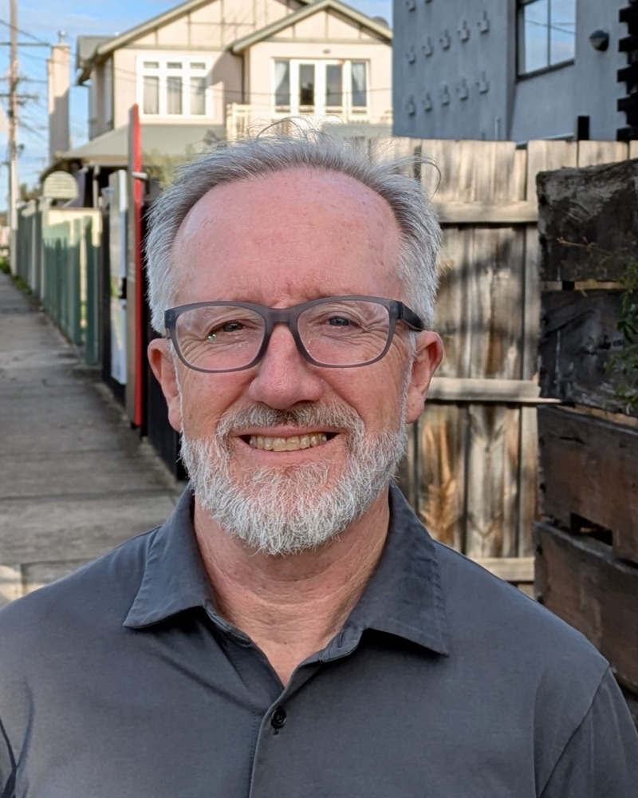

Registered Psychologist in Newport
Therapy for adolescents (13+), adults and couples
I provide warm, collaborative therapy for a range of mental health, relationship and life challenges, including trauma, anxiety and depression, life transitions, and alcohol and other drug concerns.
I welcome neurodiverse clients.
Consulting Fridays at TreeHaus, Newport
About me
Mark is a registered psychologist who believes that meaningful change often begins with feeling genuinely heard and understood.
With over 18 years' experience in community health, Mark has worked with people experiencing a broad range of mental health, relationship and life challenges, including complex and longstanding difficulties.
He offers a warm, thoughtful and collaborative approach, with the therapeutic relationship at the centre of his work. He starts with what feels important to you, exploring what is happening in your life and, when useful, how earlier experiences and relationships may have shaped the ways you think, feel and respond. He listens carefully, asks questions, notices connections and offers perspectives, while gently challenging when appropriate.
His approach is informed by psychodynamic, person-centred and relational perspectives. He also draws flexibly on ACT, CBT, schema-focused and compassion-focused approaches, as well as attachment, trauma-informed and mindfulness-based perspectives. The approach is tailored to the person rather than following a fixed formula.
An important part of Mark's work is helping people understand how earlier experiences can continue to shape their lives, while finding greater freedom in how they respond in the present. This may involve developing emotional awareness and regulation, strengthening self-worth and autonomy, changing difficulties in relationships, or finding new ways of responding to challenges that have felt stuck.
Mark works with adolescents (13+), adults and couples, including neurodiverse clients. He works with a range of mental health and life concerns, including trauma, anxiety and depression, relationship difficulties, anger, boundaries and assertiveness, self-worth, and grief and loss.
Mark is experienced in working with people who want to change their relationship with alcohol or other drugs, including those wanting to stop, reduce their use or reduce harm.
Qualifications
- Master of Couple and Relationship CounsellingLa Trobe University
- Bachelor of Psychology (Honours)Victoria University
- Registered PsychologistAustralian Health Practitioner Regulation Agency (AHPRA), registration PSY0001126694

How I can help
Trauma and its ongoing effects
Support for people affected by traumatic experiences, including difficulties that continue to affect emotions, relationships, self-worth and everyday life.
Anxiety and depression
Support with persistent worry, low mood, feeling overwhelmed, loss of motivation and difficulties coping with life's challenges.
Relationships and couples
Exploring relationship difficulties, communication, boundaries and ways of relating to each other. Mark also works with couples who want to better understand and change difficulties within their relationship.
Anger, boundaries and self-worth
Support with understanding and managing anger, setting boundaries, becoming more assertive, developing self-worth and understanding what may make these things difficult.
Life transitions, grief and loss
Support through periods of significant change, uncertainty, separation, loss or adjustment.
Alcohol and other drug use
Support for people who want to better understand or change their relationship with alcohol or other drugs, including those wanting to stop drinking or using, reduce their use, or reduce harm.
I also work with a broad range of other mental health and life concerns. If you're unsure whether I can help, you're welcome to get in touch to discuss your situation.
My approach
I believe that meaningful change often begins with feeling genuinely heard and understood.
My approach is primarily psychodynamic, person-centred and relational. I start with what feels important to you and follow the threads that emerge, rather than following a fixed formula. I'm interested in understanding not only what is happening now, but also how relationships and earlier experiences may have shaped the ways you think, feel and respond.
The therapeutic relationship is central to my work. I see myself as a guide and collaborator rather than the expert on you. I listen carefully, notice connections, ask questions, offer perspectives and, when helpful, gently challenge.
I also draw on , CBT, schema-focused and compassion-focused approaches, as well as mindfulness, and trauma-informed perspectives. I use these flexibly according to what is useful for each person.
Acceptance and Commitment Therapy. Rather than trying to argue difficult thoughts away or get rid of them, ACT focuses on changing your relationship to them, and on building a life around what matters most to you.
The ways we learned to connect with people early in life tend to shape how we relate to others as adults. An attachment-informed approach pays attention to those patterns and how they show up in the relationships that matter now.
Understanding how our difficulties developed can be important, but the aim is not to remain defined or constrained by the past. Greater understanding can help loosen its hold and create more freedom in how we respond to ourselves, our relationships and our lives.
Getting started
-
Get in touch
Send a short email or give me a call. You don't need to explain everything up front, just enough for us to start.
-
A brief conversation
We'll talk briefly about what you're looking for and whether I'm the right fit. If I'm not, I'll do my best to point you somewhere that is.
-
Your first session
The first session is about understanding your situation, your history and what you'd like to be different. There's no pressure to cover everything at once.
Fees and practical information
- Who I see
- Adolescents (13+), adults and couples
- Appointments
- Fridays, 9am to 5pm
- Session length
- 50 minutes
- Fee
- $220 per session (before Medicare rebate)
- Referrals
- I accept referrals through Mental Health Care Plans, WorkCover, TAC and from private clients
Contact
If you're considering therapy and would like to discuss whether I might be a good fit, please get in touch.
Contact details
- Phone
- 0411 477 292
Location
TreeHaus Psychology
35 Challis Street
Newport VIC 3015
The practice is in Newport, in Melbourne's inner west, a short drive from Williamstown, Spotswood, Yarraville, Seddon, Altona and Footscray, and about 10 km from the Melbourne CBD.
Map data © OpenStreetMap contributors, tiles by CARTO.